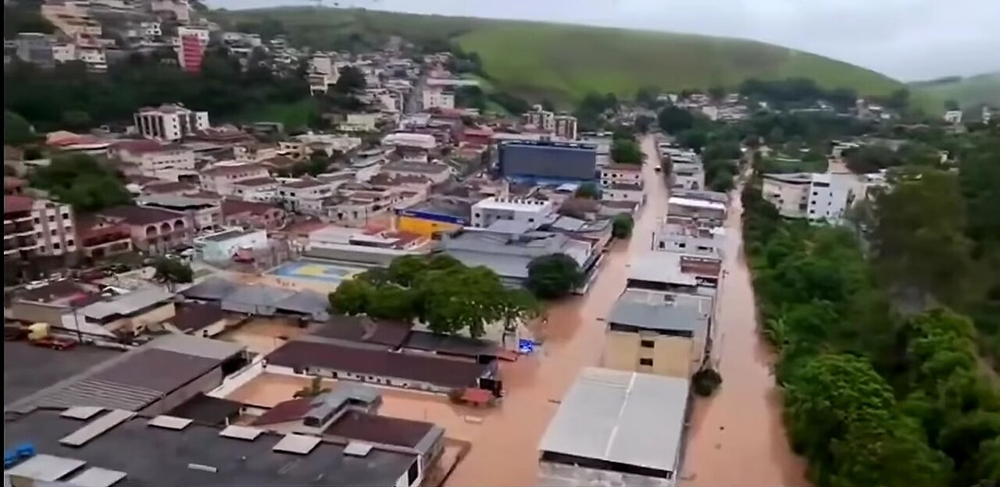
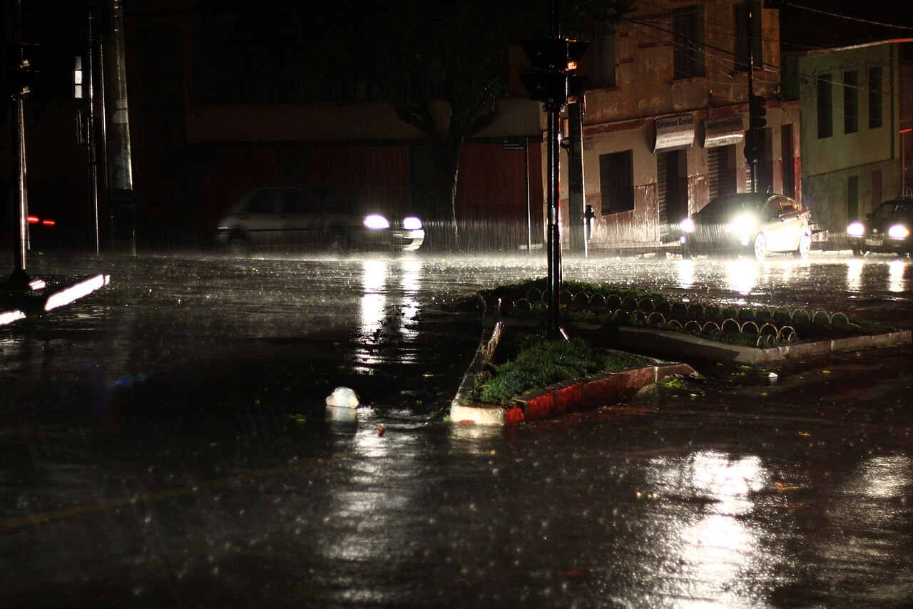

Normal
Sem chuva forte prevista. Depois de muita chuva o solo ainda pode ceder: viu rachaduras, ligue 199.
- Nível
- 1 de 4
- Quando
- Nenhuma chuva forte na previsão.
- No sensor da Fase 2
- Tudo abaixo dos limites.
- Na rua
- LED verde aceso.

Alerta de chuva no WhatsApp, com o nome da sua rua, para quem mora nas áreas de risco de Juiz de Fora.
Na foto: encostas de Juiz de Fora em 28 de fevereiro de 2026.
ALERA alerta da sua rua
Hoje
Normal
Rua Exemplo: sem chuva forte prevista. Depois de muita chuva o solo ainda pode ceder. Viu rachadura na parede ou no barranco? Ligue 199. Abrigo mais perto: Escola Municipal Exemplo, 600 m.
06:10
Atenção
Rua Exemplo: chuva prevista para hoje. Confira seu abrigo e tire o lixo da frente do bueiro. Abrigo mais perto: Escola Municipal Exemplo, 600 m.
06:10
Alerta
Rua Exemplo: chuva forte em até 24 horas. Evite a rua e deixe os documentos à mão. Abrigo mais perto: Escola Municipal Exemplo, 600 m.
06:10
Perigo
Rua Exemplo: risco agora. Saia de casa e vá para o abrigo. Abrigo mais perto: Escola Municipal Exemplo, 600 m, 8 min a pé. Emergência: Defesa Civil 199.
06:10
Demonstração: o abrigo e o horário são de exemplo.
142
áreas de risco geológico mapeadas em Juiz de Fora. Tribuna de Minas, 2024

Fevereiro de 2026 foi o pior verão da história recente de Juiz de Fora. A chuva caiu sobre uma cidade de morro, com 128 mil pessoas morando em área de risco e bueiro entupido de lixo.
O alerta que existe hoje vale para a cidade toda. Ele não diz qual rua ou qual encosta corre risco, e quando todo aviso parece igual, ninguém sai de casa. O ALERA manda o aviso com o nome da sua rua.
65
pessoas morreram em Juiz de Fora nas chuvas de fevereiro de 2026.
Fonte: Polícia Civil, via DGABC, 1 mar. 2026.
8.854
pessoas desabrigadas ou desalojadas. Prefeitura, via Agência Pública
128 mil
pessoas vivem em áreas de risco na cidade. Cemaden, via Estado de Minas
250 t
de lixo tiradas dos bueiros de janeiro a novembro de 2025. Prefeitura, via Acessa.com

O aviso de hoje fala da cidade inteira, igual para quem mora no alto do morro e para quem mora no centro. O ALERA fala com cada rua, porque o risco de uma encosta não é o da outra. Do lado esquerdo, o aviso de hoje; do direito, o ALERA.
Cidade
Sua rua
Começa sem instalar nada, só com o seu celular. Esta é a Fase 1 do projeto, o ALERA Web: três passos entre a nuvem e o seu WhatsApp.
Você informa o telefone e a rua onde mora. É com isso que o aviso deixa de ser da cidade e passa a ser seu.
O ALERA cruza a previsão de chuva com as 142 áreas de risco mapeadas da cidade e decide o nível de cada rua.

Com o nome da sua rua, o nível de risco, o que fazer e o abrigo mais perto. Sem app novo para instalar.

Cada nível tem uma cor, uma regra e uma ordem clara. Os limites em milímetros e no sensor são de demonstração e ainda não foram validados.
Sem chuva forte prevista. Depois de muita chuva o solo ainda pode ceder: viu rachaduras, ligue 199.
Chuva prevista para hoje. Confira seu abrigo e tire o lixo da frente do bueiro.
Chuva forte prevista em até 24 horas. Evite a rua e deixe os documentos à mão.
Risco agora. Saia de casa e vá para o abrigo.
Rua Exemplo
Bairro Exemplo · atualizado há 5 min
Perigo
Risco agora. Saia de casa e vá para o abrigo.
Escola Municipal Exemplo
600 m · 8 min a pé · aberto agora
No app, cuidar da rua vira missão. Cada missão vale pontos para você e para a sua rua, e as ruas disputam um ranking.
Ver as missões no appTire o lixo da boca de lobo da sua rua.
+50 pontos
Avise onde tem lixo acumulado ou bueiro entupido.
+20 pontos
Raiz ajuda a segurar o solo do barranco.
+80 pontos
Deixe o abrigo mais perto salvo no celular.
+10 pontos
Valores simulados: os pontos e o ranking são exemplos.
Entram aos poucos, área por área. O que eles medem entra no mesmo alerta do WhatsApp do morador e também vai para a Defesa Civil e para a Secretaria de Obras de Juiz de Fora.
O Sensor ALERA fica no barranco e mede o risco ali mesmo, antes da terra descer.
Um sensor capacitivo mede, em porcentagem, quanta água a terra já segurou.
Soma a chuva das últimas 24 e 72 horas.
O MPU-6050 percebe quando o terreno inclinou.
A placa compara as medidas com os limites e define o nível do alerta.
LEDs verde, amarelo e vermelho na rua, que funcionam sem internet. A sirene toca no perigo.
Um cesto de tela segura o lixo antes da galeria. Um sensor ultrassônico mede o lixo e a água, e uma chave boia dispara se a água subir demais. O ESP32 fica na calçada.
O bueiro avisa a Secretaria de Obras quando é hora de limpar, antes da chuva, e a Defesa Civil se ele entupir.
O app é uma prévia: a rua, o abrigo e os pontos são de exemplo.
Somos os MonkeyNerds, estudantes da FIAP, no Challenge 2026.